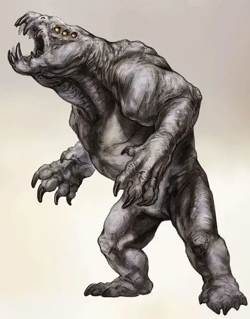

Серый рендер
Gray Render
Большой Монстр, хаотично-нейтральный

Класс Доспеха 19 (природный доспех)
Хиты 189 (18к10 + 90)
Скорость 30 футов
| мод | спас | ||
|---|---|---|---|
| СИЛ | 19 | +4 | +8 |
| ЛОВ | 13 | +1 | +1 |
| ТЕЛ | 20 | +5 | +9 |
| мод | спас | ||
|---|---|---|---|
| ИНТ | 3 | −4 | −4 |
| МДР | 6 | −2 | −2 |
| ХАР | 8 | −1 | −1 |
Навыки Восприятие +2
Чувства тёмное зрение 60 футов, пассивное Восприятие 12
Опасность 12 (8400 опыта)
Бонус мастерства +4
Среда обитания Лес, Холмы
Действия
Мультиатака. Серый рендер совершает три атаки: одну Укусом и две Когтями.
Укус. Рукопашная атака оружием: +8 к атаке, досягаемость 5 футов, одна цель. Попадание: 17 (2к12 + 4) колющего урона. Если цель Среднего размера или меньше, она должна преуспеть в спасброске Силы Сл 16, иначе же будет сбита с ног.
Когти. Рукопашная атака оружием: +8 к атаке, досягаемость 10 футов, одна цель. Попадание: 13 (2к8 + 4) рубящего урона, плюс 7 (2к6) дробящего урона, если цель сбита с ног.
Реакции
Кровавое неистовство. Когда серый рендер получает урон, он совершает одну рукопашную атаку по случайному существу в пределах досягаемости, которое не является его хозяином.
Описание
Любознательность движет серым рендером. Несмотря на свою неуклюжую форму и страшный аппетит, оно больше всего хочет связать себя с разумным существом и, соединившись с ним, посвятить свою жизнь защите этого существа. Благодаря великой силе и дикой природе, серые рендеры способны быть жестокими защитниками, но лишены малейшей проворности.
Распространяющее бедствие. Серые рендеры размножаются путём формирования выделений на своих телах, которые, достигнув зрелости, разрываются и начинают собственную жизнь юными серыми рендерами. У этих чудищ нет никаких чувств перед своими молодыми отпрысками, и нет склонности собираться группой вместе со своими сородичами.
Непредсказуемые союзники. Побочным эффектом после спаривания, у каждого серого рендера появляется непреодолимое желание связаться с разумным существом. Когда оно сталкивается с подходящим хозяином, рендер воспевает ему странный выщёлкивающий клич в сопровождении с царапаньем об землю и демонстрации своего почтения. Сформировав связь, рендер во всём служит своему мастеру. Хоть эта связь и может быть хорошим преимуществом, рендеры по своей природе непредсказуемы. В бою, рендер сражается со всей своей свирепостью и никогда сознательно не навредит своему хозяину, однако вне битвы, серый рендер может значительно усложнить своим присутствием ситуацию для компаньонов хозяина. Оно может следовать за хозяином, даже когда тому прикажут оставаться на месте; может уничтожить дом хозяина, создать дыры на корабле, убить лошадей, атаковать любого, кому позавидует, и так далее. Серый рендер может быть неплохим спутником, но его поведение всегда непредсказуемо. В таблице Причуды серого рендера представлены возможные причуды, которые могут быть определены случайным образом или выбраны по желанию.
Причуды серого рендера
| к12 | Причуда |
| 1 | Ненавидит лошадей и других ездовых животных |
| 2 | Громко рычит из-за ревности к любому, кто прикоснётся к его связанному существу. |
| 3 | Любит уютно устраиваться рядом со своим связанным существом |
| 4 | Выкорчёвывает и жуёт деревья |
| 5 | Иногда испускает слезоточивые газы |
| 6 | Приносит привязному существу часть добытого мяса |
| 7 | Безудержно копает почву |
| 8 | Бросается на телеги и фургоны словно они ужасные монстры |
| 9 | Воет во время дождя |
| 10 | Жалобно скулит в темноте |
| 11 | Зарывает найденные сокровища |
| 12 | Гоняется за птицами, пытаясь схватить в воздухе, не замечая учинённые разрушения |